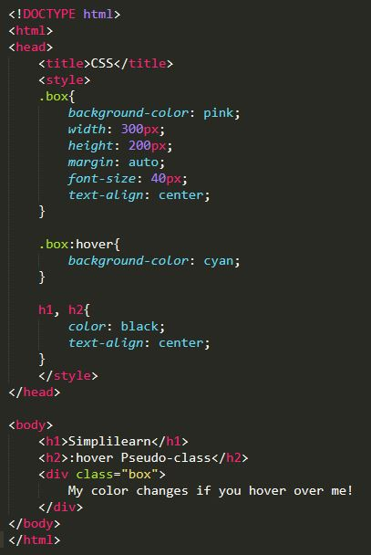

A CSS
A CSS (Cascading Style Sheets, magyarul: „lépcsőzetes stíluslapok”) a számítástechnikában egy stílusleíró nyelv, mely a HTML vagy XHTML típusú strukturált dokumentumok megjelenését írja le. Ezenkívül használható bármilyen XML alapú dokumentum stílusának leírására is, mint például az SVG, XUL stb.
